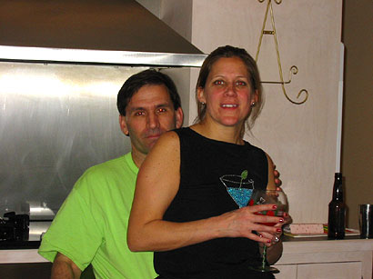
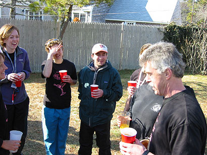

Two Bods and a Cod Hash Hash
Run #882,883, March 22, 23, 2003
Start: I don't know... the woods somewhere in Harwich or Dennis
Theme: Martinis + Mud!
Beer Checks: See "Start"
On In: Jay-Zs crib (yeeeeaaah boyeeeee!)
Hares: Deep Throat (well, for this weekend at least that's still her name), Ever Ready Special
Edition, Cod The Animal, Muffalotta, Trail Hoover
Time: 1:15 HST?
Total Distance: Far enough for two beer checks
Scribe: One Drunk Walking
Weather: 55-60 degrees F
Hounds: (in order of checklist given to me Sunday:)
Sponge Bath Square Pants, Raging Queen, Cum Chowda, Cum PrikPow, Toss My Salad, Little Neck, Bang Cock, Oozing Syphilitic Dictaphone, Velvet Pelvis, WinToes 69, Pond Scum, SphincterSicle, Dr.Who the Slasher (from Boston!), Hot 4 Tots, OneDrunk, MasterGator, Cream Whora, Cock Climber, Friar Fuck, Sugar Plum Fairy, Puff n Stuff, Swells Like Torn Anus, Anti-Cock, just Heather, just Andy, Muther Shucker, Just Denise, Swallow My Pride, Basket Boom Boom, Stuff Me, Impo-tent, Prom Cream
Canine Hounds: Shitty Trail, Seamus, and Mr. Peabody
Trail #1: Some people erected their tents in the back, some had a drink or three, and some probably did both. I heard that Friars dog, Shitty Trail, who is afraid of most other dogs, was even frightened of a porcelain statue of a pig? We got into some cars and drove over to the beginning of the trail, which was maybe technically in the town of Dennis, in the woods where high school kids go to drink.
The trail went along a path through the trees that became progressively narrower and more shiggified. There was a long stretch though a muddy section of this path w/ only thick brush and thorns on each side of a shallow, water-filled trench. At this point you had to decide if you preferred getting wet over getting bloody... how devious! I think this is good evidence that live haring under certain circumstances pales in comparison to pre-laying the trail; there's just no way the hares could have set this up w/ only a skull-start, unless it was like a whole hour, and then it wouldn't exactly be a live trail, would it? So it was only a matter of time until I had to turn left, give up and get wet. There was a flour mark next to a rusted little shack, and BC#1 was not far from this, at the edge of a small pond or bay. There were nice, powerful pink drinks pre-mixed in Vodka bottles, and a big rusted out car corpse.
Didn't seem like trail was too far between here and BC#2, but that didn't stop some of the bimbos from autohashing. This second stop was on top of a hill under some big power lines. I think they shoulda hung the beer from the stanchion pole things, b/c it was not waiting for us when we got there (boo!). The Beer eventually showed up inside of a car, and the bearers of suds plus two hashers in piggyback formation were pelted w/ snowballs as they ascended the hill. There was a meeting of the Crack House Harriers, and a pig pile rolling down the hill that involved MasterGator and no less than 3 harriettes.
Then it seemed like an even shorter distance from here back to where the cars were parked. Same as last year, the on-in was at a great little spot within walking distance of our home for the weekend... JZs bar!
On-In #1: After some discussion, Oozing was appointed RA for the even- ing. We sang "Green Leaves are Yellow" to get everybody's attention. The hares were poked into the circle and here's some of the comments - "Not enough horseshit", "Scenery +6.9, logistics -6.9, =0!", Friar wrung his socks out over the hares craniums, "1Pm sharp?", "Where's the shiggy?", "Too long", "EXCELLENT!", "Not long enough", "Didn't get wet", "Where's the sex?", "Not enough anthrax and HAZMAT teams", "Where's the beer?" The hares sang "Used to Work in Chicago", and then Puffy and Bo had to drink for wearing the same black GW-riding-a- rocket shirt. Two of the hares and Basket didn't get wet on trail, so they drank for shiggy avoidance. Oozing was having deja-vu, so he brought Cod in for advising those who just quaffed to beware of the lake after BC#1, and some more people wearing identical clothing had to drink. They sang a song with the lyrics "Oh my darling... you tickle mine, Ill tickle yours" which was a new one to me.

After The Slasher and Swallow down-downed for being over- achieving doctors, two virgins called Teresa (Denise's mom) and Denise were demented very rapidly - "This is your down-down song, it is not very long". Some jerk wouldn't turn the jukebox down after we asked him nicely, so to see how drunk he was we invited him in for a quick comment. All he had to slur was "If I'm getting initiated I wanna say 'drink beers and have fun'". No shit, Einstein! That's like my entire philosophy of life, dude.
The other RAs kept giving themselves down-down privileges (b/c Oozing was running out of stuff to say, and the big hoagies had arrived?), so we sang "They're the Meanest". We were about to perform "Swing Low" when someone remembered Heather hadn't had a birthday down-down yet. It was agreed that the easiest way tos um up the afternoon was "No sex, lots shiggy", so the hares drank, Oozing made himself drink one last time, and that was it!
Back at the ranch some more stuff happened, well, like drinking and watching past episodes of Sex in the City, but of course the REALLY interesting stuff didnt take place until much later, when all but 4 of us had gone off to Slumberland; of course Im re- ferring to Nude Scattergories and Midnight Baseball. Wow.
Two write-ups for the price of one! Im so very generous:
Date: Sunday, March 23rd, 2003
Start: Huh?
Theme: Ow My Aching Cranium, Make it Stop
Beer Checks: Wha?
On In: Same as where we woke up
Hares: Oozing and Muther Shucker
Time: Afternoon...
Total Distance: A smidge too long for a recovery run, but the fantastic shiggy made up for
this
Scribe: One Drunk Walking
Weather: Just right!
Hounds: Same as yesterday, excluding the "justs", and V. Pelvis, C. Climber, M. Gator and H. Tots. Virgins were Ty and Shirley
Canine hounds: "It shouldnt happen to a dog"... in other words... ?
Trail #2: Oh snap, I cant really put a coherent picture of this trail together for you, although I did do a watercolor of the experience on Tues. night that looks great! Maybe we can have Hash Art Day sometime + share our creative endeavors? Worth a try...
It was muddy, it was wet, it was a glorious tribute to hashing at its most hard-core! Songs will be sung about this trail throughout the ages, I assure you. A prime contender for Best of '03, without a doubt! If you missed it, you might not have survived it (more than half of the trail had a Suction Factor of 6.9 or more), so maybe you're better off?
On In #2: Basket was our RA, and he gave us a rousing and obscure (for Boston) song called "Lobstermen Back from the Sea". The hares were shoved inward, and these were comments - "Proved I was intelligent", "Could it be wetter, please?", "Sucked me down", "Not enough shiggy, small sheep or goats", "Almost enough shiggy", "Gorgeous weather, scenery and people", "I forgot what I was gonna say, but now Ill say it Tore the Roof off the Muther Shucker!" - okay I gotta toot my own horn here, and once more at the end - I remember now that what I WANTED to say was "Not enough Lyme disease", since a hasher (Torn Anus?) found a large tick on his arm (BC#2?). Can I help it if Im hilarious? You know you love it : ) Deep Throats comment was "They're real, and they're spectacular - Im the Shiggy Messiah!". SPF called Oozing "a belly belly bad mon".

Hares did down-downs and Muther Shucker was "Beat by a Paki". They did the "I don't want to go to war" song (nice!). The Virgins entered, and all fell silent. Cum Chowda demented them while wearing his little red Satan horns. Ty likes doggy style and Shirley said "There is no square root of 69" (Ty said "its irrational"). Here's to them! Friar was caught avoiding the delicious, nutritious shiggy this time, so he teabagged w/ an assist from SLTA. Basket proceeded to insert a tennis ball into his rectum. EverReady told yesterday's hares "We need to talk" (uh oh...), and then they sand "Rhode Island Red". The circle ended right about when Oozing was pushing Swallow in a wheelbarrow, it tipped over and she spilled his beer.

Quotes!
"He (Enos?) put his scrotum on the back of my neck while he was wearing a tutu, for Chrissake!" - Puff n Stuff
"Loggerhead trail is just ahead... that is Lager and Head" ?
"The Shawkanaw (get it? Shock and Awe??) indians must've set this trail" ??
"Hey, can I borrow your thermometer?" Me pointing to Swallows harmonica
"Watch your hole!" Everybody
"Where does that (F U you Fin F!) come from?"(Stuff Me)"From the Heart!" (Bo)
"If you don't drink, you're letting the terrorists win!" Puffy!